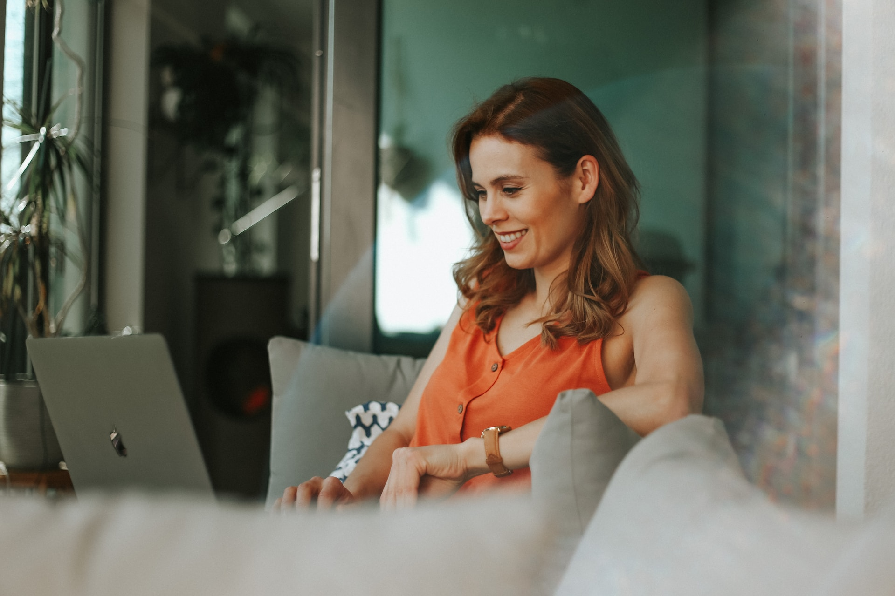

Paula Andrade - Lider del proyecto
Profesional con 10 años de experiencia en el área de marketing y publicidad. Capacidad para desarrollar estrategias de comunicación efectivas y creativas para aumentar la presencia de la marca en el mercado. Habilidad para liderar equipos de trabajo y trabajar bajo presión para cumplir con los objetivos establecidos.
Conoce nuestra labor
Una labor social importante para las mascotas es la promoción de la adopción responsable. Muchas mascotas son abandonadas o entregadas a refugios porque sus dueños no pueden cuidar de ellas o porque fueron compradas impulsivamente sin considerar la responsabilidad que implica tener una mascota. La adopción responsable implica educar a las personas sobre la importancia de adoptar mascotas de refugios y centros de rescate, en lugar de comprar animales de criaderos o tiendas de mascotas. También implica asegurarse de que se brinde a las mascotas el cuidado adecuado, incluyendo alimentación, atención veterinaria y ejercicio diario. La adopción responsable es una forma de proteger a las mascotas y evitar que sean abandonadas o maltratadas. Además, al adoptar una mascota de un refugio, se les brinda una segunda oportunidad a los animales que necesitan un hogar amoroso y seguro.
Lorena Quimí
Profesional en análisis de datos con 5 años de experiencia en la industria. Amplia experiencia en el diseño, implementación y mantenimiento de bases de datos y en el análisis de grandes conjuntos de datos utilizando herramientas de software estadístico. Habilidad para identificar tendencias y patrones en los datos, así como para comunicar los resultados a diferentes audiencias de manera efectiva. Excelente capacidad de resolución de problemas y de trabajo en equipo.
Ximena Quimí

Profesional en Big Data con 7 años de experiencia en la industria. Amplia experiencia en el diseño y implementación de soluciones de Big Data, incluyendo la integración de datos de diferentes fuentes, el procesamiento de grandes conjuntos de datos y la implementación de soluciones de análisis de datos. Habilidad para identificar patrones y tendencias en los datos y para trabajar en equipo en entornos multidisciplinarios. Excelente capacidad para gestionar proyectos de Big Data desde la concepción hasta la implementación.
Renata Quimí
Profesional en estadística con 8 años de experiencia en la industria. Amplia experiencia en el diseño y análisis de experimentos, la implementación de modelos estadísticos y el análisis de grandes conjuntos de datos. Habilidad para trabajar en equipo y comunicar los resultados de análisis estadísticos complejos a diferentes audiencias. Excelente capacidad para resolver problemas y tomar decisiones basadas en datos.